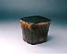
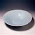
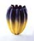
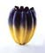

JAPAN
- Keramik und Fotografie, Tradition und Gegenwart
Ausstellung in den Deichtorhallen, Hamburg
Die Ausstellung JAPAN
- Keramik und Fotografie, Tradition und Gegenwart, wird
gegenwärtig in den Deichtorhallen
Hamburg gehalten. Sie stellt die zwei unterschiedlichen Genres der
traditionsreichen Keramik und die der neuzeitlichen Fotografie gegenüber.
Die Keramik nimmt in der japanischen Gesellschaft und Kultur einen
besonderen Platz ein, wobei sie bestimmte kulturelle, philosophische
oder religiöse Prinzipien verinnerlicht, die mit dem Zen Buddhismus,
der Teezeremonie
und dem japanischen Ideal von Schönheit und Demut zu tun haben.
Aber japanische Keramik ist nicht unbedingt nur zum Benutzen - Skulpturen
waren auch üblich, wie z.B. religiöse Figuren oder Buddhastatuen.
Im heutigen Japan wird Keramik gefertigt, die auf jahrtausendealte
Traditionen beruht, aber auch solche, die mit der Tradition bricht,
wie z.B. die der Sodeisha
Bewegung.

Es gibt einen goldenen Faden, der sich durch die japanische Keramik
zieht - der des 'glücklichen Zufalls'. Flugasche vom Anagamaofen,
Farbübertragung von nahen Objekten durch Verflüchtigung,
unbeabsichtigte Risse - dies alles trägt eher zum Wert eines
Stückes bei. Dabei handelt es sich mehr um einen spirituellen,
als einen materiellen Wert. Somit wird auch ein Werk unbezahlbar.
Ein solches Object ist die Teeschale 'Fujisan'
des Japanischen Meisters Koetsu (1558-1637).
Die Keramik, die in dieser Ausstellung vertreten ist, wurde von
einer breiten Palette gewählt - Seto,
Bizen,
Hagi
und Karatsu.
Die Moderne ist ebenfalls mit Stücken vertreten, die eher an
Design oder Konzeptkunst errinnern, als an eine sagenumwobene Teeschale.
Manche dieser Werke scheinen den Charakter des Tons zu verneinen,
z.B. Nakashima's Porcellanform.
  
Im Kontrast zur fernöstlichen Keramik steht die eher westlich
orientierte Fotografie. Die japanische Fotografie ist frei von jahrhundertealten
Tradtionen und kann somit abenteuerlustiger und mehr avant-garde
sein.

Die Themenbereiche kommen aus dem japanischen, aber auch aus dem
westlichen Kulturkreis, was eine angenehme Spannung in den Werken
hervorruft. Diese Spannung ist auch in dem oft problematischen Verhältnis
zwischen den zwei sich gegenüberstehenden, aber vom Japaner
gleichermaßen akzeptierten Bereichen der Natur und des Fortschritts
bemerkbar. Darin liegt vielleicht die stärkste Verbindung zur
Keramik, der Gegensatz in der Japanischen Psyche - der Kampf zwischen
Alt und Neu.
|
Keramiker:
Yo AKIYAMA
Sueharu FUKAMI
Kiyoyuki KATO
Chieko KATSUMATA
Hideo KOBAYASHI
Kosei MATSUI
Hideo MATSUMOTO
Kinpei NAKAMURA
Oguna NAKANO
Harumi NAKASHIMA
Toshio OHI
Hoju SAKAI
Akira SOMA
Shigemitsu TAKEUCHI
Sajiro TANAKA
Seimei TSUJI
Morihiro WADA
Akira YAGI
|
Fotografen:
Nobuyoshi ARAKI
Mikiko HARA
Naoya HATAKEYAMA
Takashi HOMMA
Osamu KANEMURA
Chikashi KASAI
Norio KOBAYASHI
Hiroyuki MASUYAMA
Ryuji MIYAMOTO
Daido MORIYAMA
Yoichi NAGANO
Yurie NAGASHIMA
Asako NARAHASHI
Keiko SASAOKA
Yoshiko SEINO
Masato SETO
Hiroshi SUGIMOTO
Takashi YASUMURA
Tsukasa YOKOZAWA
|
Pressemitteilung
More Articles |


{kind=link}
{kind=link}
{kind=link}
{kind=link}
{kind=link}
{kind=link}
{kind=link}